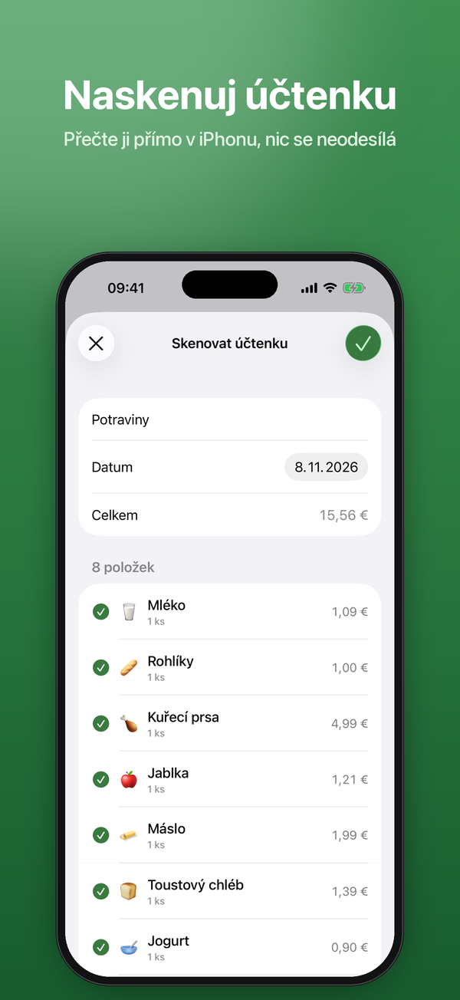
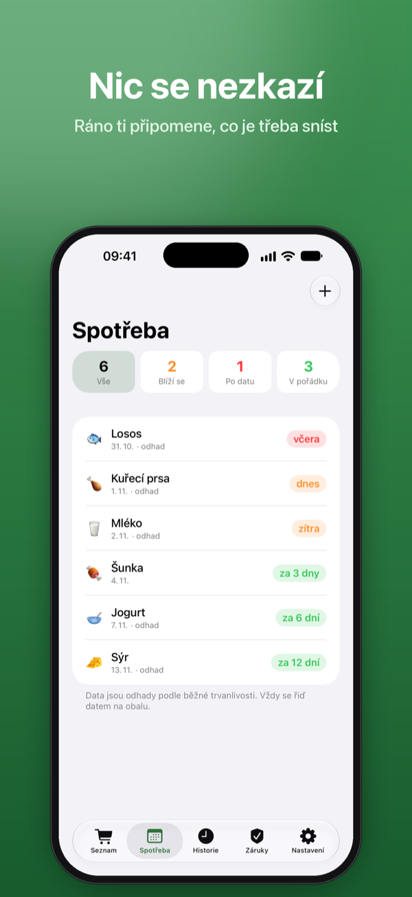
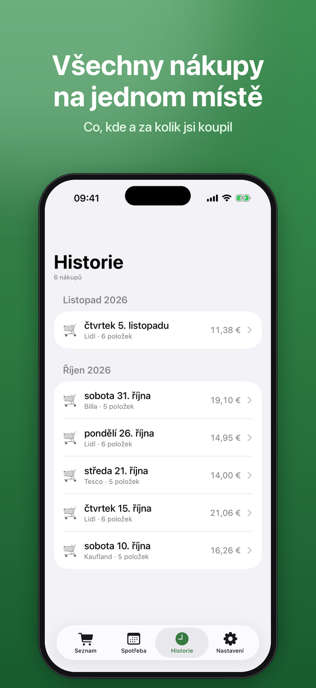

Jak to vypadá






Co Shoppie umí
Rychlé přidávání
Ťukněte na + a napište, co je potřeba. Shoppie zná asi 540 běžných produktů a sám je zařadí do kategorie. Přidáte i množství.
Kolečko oblíbených
Podržte + a vyberte z kolečka, co kupujete nejčastěji. Co kolečko nabízí, si nastavíte sami.
Ví, co vám dochází
Shoppie se učí z vašich nákupů a navrhne, co asi bude potřeba koupit.
Sken účtenky
Vyfoťte účtenku a Shoppie rozpozná produkty i ceny včetně slev. Přímo v iPhonu, i offline.
Spotřeba
Koupené potraviny se objeví samy i s datem spotřeby. Ráno vám připomene, co je potřeba sníst, a potraviny po datu může sám odstranit.
Pravidelné položky
Káva každé 2 týdny, papír každý měsíc. Ve zvolený den se přidají do seznamu samy.
Záruky
Záruky i s fotkou účtenky na jednom místě. Před koncem záruky dostanete připomínku.
Společná domácnost
Pozvěte rodinu přes iCloud. Změny v seznamech vidí všichni hned.
Historie a víc seznamů
Všechny nákupy s obchodem a počtem položek. Přetažením doprava položku znovu přidáte. Seznamů můžete mít víc.
Navrženo i pro iPhone Duo
Posouvejte dál a rozložte ho. Shoppie se z vnějšího displeje přesune na velký vnitřní displej.
Na rozloženém iPhonu Duo využije Shoppie celý velký vnitřní displej.
A ještě
- Slovenština, čeština, angličtina
- Tmavý režim
- Velké písmo a VoiceOver
- Režim na šířku
- iPhone Duo
- Synchronizace přes iCloud
- Úvodní průvodce s animacemi
- Bez reklam a registrace
Vaše data patří jen vám
Shoppie nesbírá žádná data. Žádné účty, reklamy ani sledování. Vše je ve vašem iPhonu a ve vašem iCloudu.
Ochrana soukromí